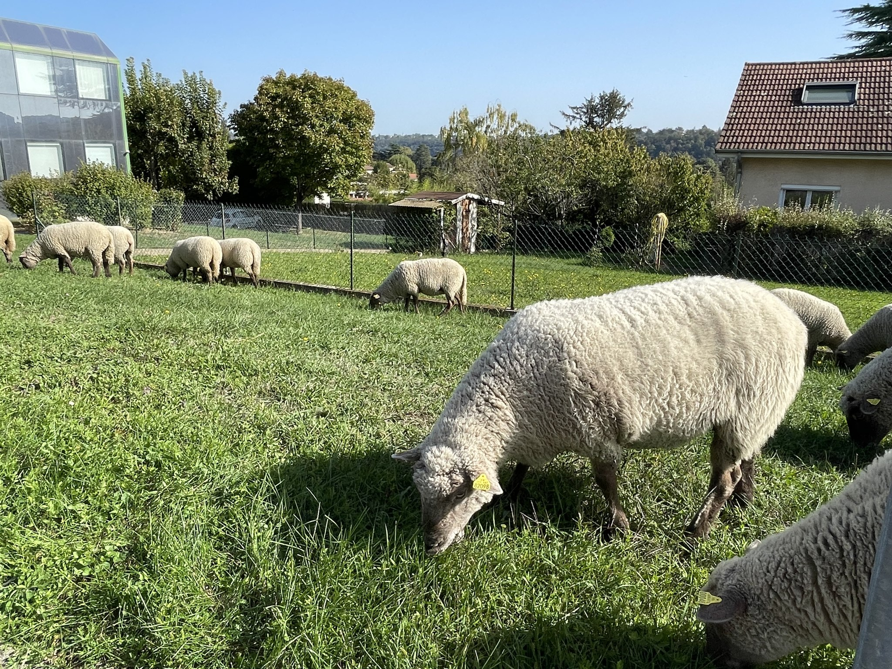

Stras’bêrgerie, en bref !
Stras’bêrgerie, c’est une association créée en 2025 avec un projet simple :
installer et animer une bergerie urbaine à Strasbourg, au coeur du quartier Koenigshoffen !

Les objectifs de cette démarche sont à la fois sociaux et environnementaux, et, en complément de la vie de la bergerie, diverses activités sont prévues pour atteindre ces objectifs !
De l’éco-pâturage
Sur des espaces verts publics et privés, l’éco-pâturage permet de mieux préserver la biodiversité des prairies, pollue moins et est plus agréable à voir que les tondeuses !
Des animations pédagogiques
Autour du mouton, des activités pour tous les âges permettront de sensibiliser notamment autour des thématiques de la biodiversité, de l’agriculture ou de l’alimentation !
Des moments festifs
Des rendez-vous festifs autour de la bergerie, comme par exemple une transhumance urbaine, permettront de crééer du lien social entre les habitant(e)s !
La valorisation de sproduits
Les produits issus de la bergerie (laine et crottin en particulier) seront valorisés, sous différentes formes !
C’est pour quand ?
Au fil des chantiers participatifs, la bergerie se prépare déjà à accueillir les brebis… dont l’arrivée est prévue début à l’été 2026 !
Pour en savoir plus
Consultez les dernières actualités de Stras'bêrgerie Consultez nos ressources préférées